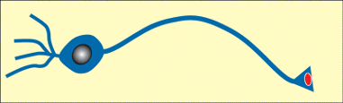

Neurophonetics
Vijay Solanki
Week 10
Thurs 9th March 2017
What is Neurophonetics?
''Neurophonetics deals with neurogenic impairments of the motor act of speaking and of the perceptual processes of spoken language understanding, with the aim of unravelling the neural organization of speech motor control and speech perception.''
(Ziegler 2008: 491)
''Neurophonetics aims at the elucidation of the brain mechanisms underlying speech communication in our species''
(Hertrich & Ackermann 2013)
''To the extent that phonetics is a subdiscipline of linguistics, neurophonetics can be viewed as a subdiscipline of neurolinguistics''
(Ziegler 2008)
Lecture Outline
- Anatomy & Physiology of the Brain
- The WLG Model
- Measurement Tools
- Modern Advances
- Classic Neuroimaging Studies
- Anatomical Contributions
- The Integration Problem
- Conclusion
Warning slide
There will be some bloody(ish) images
Anatomy and physiology of the brain
The brain is made of NEURONS and GLIAL CELLS (but glial cells are not discussed here)
NEURONS are arranged into layers which allow for the efficient transfer of information, carried as electrical impulses
NEURONAL LAYERS in different areas are arranged to maximise processing efficiency for the functions that they are required to perform and provide the basis for the larger structures of the brain
Neurons
Neurons transmit information to other neurons or muscles (via the brain stem)
FIRING: electrical ACTION POTENTIAL travels down AXON to SYNAPSE (junction)
A NEUROTRANSMITTER is released which either EXCITES or INHIBITS the post-synaptic cell
MYELIN encases important connections, both to protect vital information transfer routes and to speed up transmission of the action potential

Neuronal Layers

Neurons are arranged into layers specific to the functions that they are required to perform
Neurons that perform similar functions are LOCALISED to a particular region of the brain
Brain Structure
The Cerebrum
Cerebrum = 2 hemispheres
Each hemisphere is divided into 4 lobes:
- Frontal
- Parietal
- Temporal
- Occipital
The cerebral cortex
Cerebral cortex = surface of cerebrum
Cortex can be roughly divided into areas of functions
e.g. language, personality, vision, audition, motor and sensory functions
Genes to Cognition Online
www.g2conline.orgThe WLG Model
Measurement Tools
Modern Advances
Conclusion?
“it takes the whole brain and, by extension, the whole person to participate in producing and perceiving a voice”
Sidtis & Kreiman (2011)
References
Anwander, A., Tittgemeyer, M., von Cramon, D. Y., Friederici, A. D. & Knцsche, T. R. (2007). Connectivity-Based Parcellation of Broca's Area.. Cerebral cortex (New York, N.Y. : 1991) 17 (4), 816--25.
Bastos, A. M., Vezoli, J. & Fries, P. (2015). Communication through coherence with inter-areal delays. Current Opinion in Neurobiology 31, 173--180.
Brunet, N., Vinck, M., Bosman, C. A., Singer, W. & Fries, P. (2014). Gamma or no gamma, that is the question. Trends in Cognitive Sciences 18 (10), 507--509.
Feng, S., Legault, J., Yang, L., Zhu, J., Shao, K. & Yang, Y. (2015). Differences in grammatical processing strategies for active and passive sentences: An fMRI study. Journal of Neurolinguistics 33 (0), 104--117.
Francis, A. L. & Driscoll, C. (2006). Training to use voice onset time as a cue to talker identification induces a left-ear/right-hemisphere processing advantage.. Brain and language 98 (3), 310--8.
Friederici, A. D. (2011). The brain basis of language processing: from structure to function.. Physiological reviews 91 (4), 1357--92.
Fries, P., et al. (2005). A mechanism for cognitive dynamics: neuronal communication through neuronal coherence. Trends in cognitive sciences 9 (10), 474--480.
Ghitza, O., Giraud, A.-L. & Poeppel, D. (2012). Neuronal oscillations and speech perception: critical-band temporal envelopes are the essence.. Frontiers in human neuroscience 6 (340), 340.
Giraud, A.-L. & Poeppel, D. (2012). Cortical oscillations and speech processing: emerging computational principles and operations.. Nature neuroscience 15 (4), 511--7.
Golestani, N., Paus, T. & Zatorre, R. J. (2002). Anatomical Correlates of Learning Novel Speech Sounds. Neuron 35 (5), 997--1010.
Golestani, N., Price, C. J. & Scott, S. K. (2011). Born with an ear for dialects? Structural plasticity in the expert phonetician brain.. The Journal of neuroscience : the official journal of the Society for Neuroscience 31 (11), 4213--20.
Gross, J., Hoogenboom, N., Thut, G., Schyns, Philippe Phillippe, Panzeri, S., Belin, P., Garrod, S. & Stefano, P. (2013). Speech rhythms and multiplexed oscillatory sensory coding in the human brain.. PLoS biology 11 (12), e1001752.
Hertrich, I. & Ackermann, H. (2013). Neurophonetics. Wiley Interdisciplinary Reviews: Cognitive Science 4 (2), 191--200.
Hervé, P.-Y., Zago, L., Petit, L., Mazoyer, B. & Tzourio-Mazoyer, N. (2013). Revisiting human hemispheric specialization with neuroimaging.. Trends in cognitive sciences 17 (2), 69--80.
Hickok, G. & Poeppel, D. (2004). Dorsal and ventral streams: a framework for understanding aspects of the functional anatomy of language.. Cognition 92 (1-2), 67--99.
Kim, J., Lee, S.-K. & Lee, B. (2014). EEG classification in a single-trial basis for vowel speech perception using multivariate empirical mode decomposition. Journal of Neural Engineering 11 (3), 36010--36021.
Mehta, R. K. & Parasuraman, R. (2013). Neuroergonomics: A Review of Applications to Physical and Cognitive Work. Frontiers in Human Neuroscience 7 (889).
Nielsen, J. A., Zielinski, B. A., Ferguson, M. A., Lainhart, J. E. & Anderson, J. S. (2013). An evaluation of the left-brain vs. right-brain hypothesis with resting state functional connectivity magnetic resonance imaging.. PloS one 8 (8), e71275.
Scott, S. K. (2000). Identification of a pathway for intelligible speech in the left temporal lobe. Brain 123 (12), 2400--2406.
Scott, S. K., McGettigan, C. & Eisner, F. (2009). A little more conversation, a little less action–candidate roles for the motor cortex in speech perception.. Nature reviews. Neuroscience 10 (4), 295--302.
Sidtis, D. & Kreiman, J. (2012). In the beginning was the familiar voice: personally familiar voices in the evolutionary and contemporary biology of communication. Integrative psychological & behavioral science 46 (2), 146--59.
Valaki, C. E., Maestu, F., Simos, P. G., Zhang, W., Fernandez, A., Amo, C. M., Ortiz, T. M. & Papanicolaou, A. C. (2004). Cortical organization for receptive language functions in Chinese, English, and Spanish: a cross-linguistic MEG study. Neuropsychologia 42 (7), 967--79.
Van Horn, J. D., Irimia, A., Torgerson, C. M., Chambers, M. C., Kikinis, R. & Toga, A. W. (2012). Mapping Connectivity Damage in the Case of Phineas Gage. PLoS ONE 7 (5), e37454.
Zatorre, R. J., Belin, P. & Penhune, V. B. (2002). Structure and function of auditory cortex: music and speech. Trends in cognitive sciences 6 (1), 37--46.